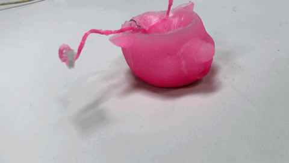

REPRODUCE IN OTHER SCALE A MUG
SCANNING A MUG I LIKE WITH THE NEW FAB LAB SCANNER
EXCELLENT RESULTS BUT NO ALL THE MESHES ARE CLOSED
The scanner had excellent results but I couldn´t scan the bottom part. It is recommended to ask for help to scan something.
CLOSE THE MESHES
The scanner gives you two options, dots and meshes. Now prepare the file to 3D print to generate the negative of the model.

GENERATE THE MOLD
3D PRINT THE MOLD
After the preparation of the meshes, I print the mold to cast.

A CANDLE
HOW TO MAKE A CANDLE - TUTORIAL
INGREDIENTS
I used parafina and color crayons to colored.
PROCESS
LET IT DRY

FINAL RESULTS

DRAWBACKS
Due to the hot temperature of the parafina, I recommend to do not put it that hot.
The wick for the candle moves while the parabina is placed, adjust well.
the paraffin overflowed a bit while it was drying, which meant that the final result was not complete (in the case of the ears).